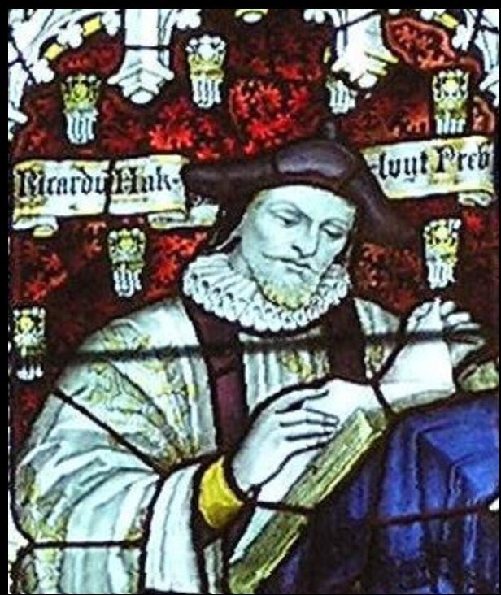
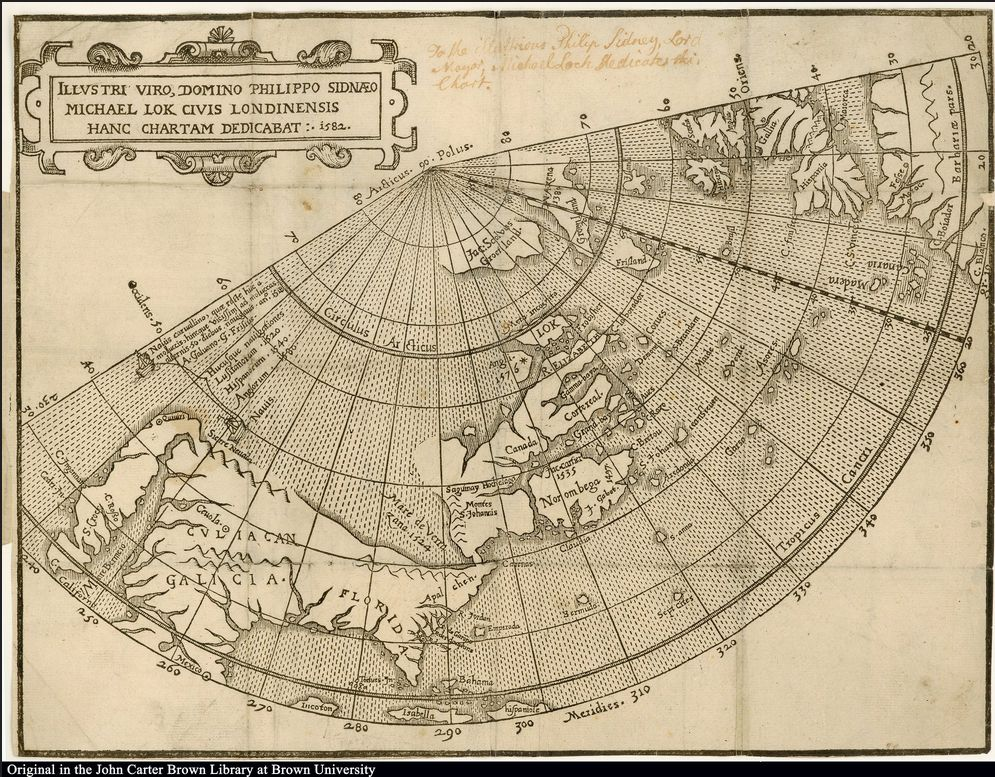
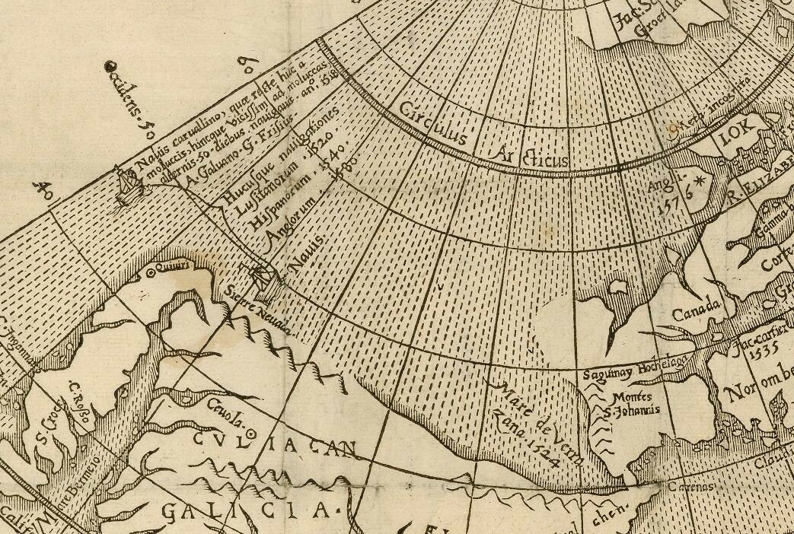
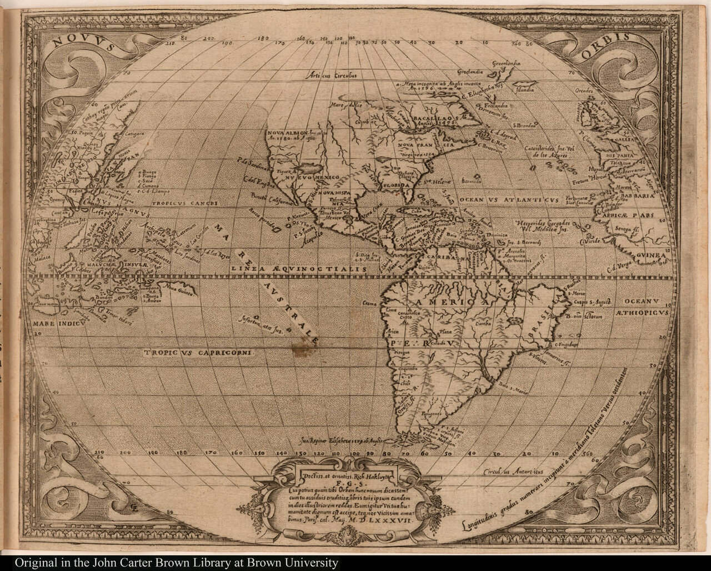
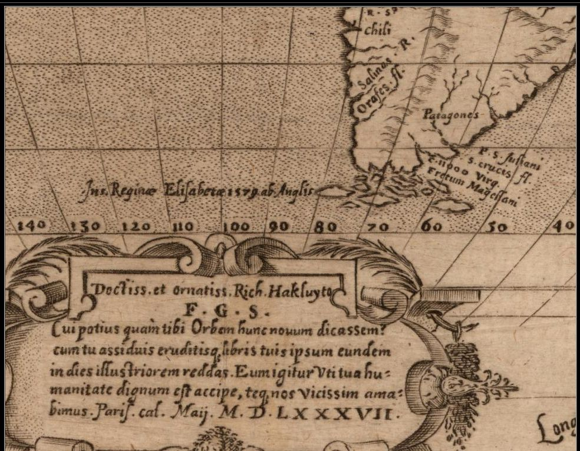

Судьба судового журнала «Золотой Лани» и карты Дрейка
Писатель слов и сочинитель фраз,
Не дописал ты повесть до конца!
Л. Н. Мартынов
В прошлый раз мы установили, что англичане впервые публично заявили о своем приоритете в открытии проливов южнее Магелланова в 1625 году. Возникает естественный вопрос: а разве до этой даты не было публикаций о кругосветном плавании Дрейка?
Конечно же были. Считается, что первый печатный рассказ об этой экспедиции появился в 1589 году в книге Ричарда Хаклюйта.

Ричард Хаклюйт. Витраж в Кафедральном соборе Бристоля.
В июне 1589 года Дрейк вернулся после провальной Лиссабонской экспедиции (если Судия позволит, мы поговорим об этой английской Контрармаде в будущем). Большие потери англичан погрузили окружение Елизаветы в уныние, а Дрейк попал в опалу. Никто не хотел разбираться, виноват ли он в поражении или нет. С 1589 по 1593 год Дрейк жил как частное лицо в своем имении в Уэст-Кантри. О нем предпочитали не говорить, к делам государства его не привлекали. Видимо по этой причине Ричард Хаклюйт первоначально не включил упоминаний о кругосветном плавании Дрейка в свою «Книгу путешествий» («Основные плавания, путешествия, торговые экспедиции и открытия английской нации» – The Principall Navigations, Voyages, Traffiques, and Discoveries of the English Nation). Сейчас трудно сказать, кто настоял на устранении этой несправедливости, говорят, что это мог быть государственный секретарь Фрэнсис Уолсингем, от которого Хаклюйт получал указания, что можно и чего нельзя публиковать.
Как бы то ни было, но Хаклюйт принял решение сделать вставку с текстом об экспедиции Дрейка 1577-1580 гг. в уже отпечатанный и переплетенный том. Тетрадь из шести листов без нумерации страниц, с текстом под названием "The famous voyage of Sir Francis Drake into the South Sea, and there hence about the whole globe of the Earth, begun in the yeere of our Lord, 1577", была вставлена между страницами 643 и 644 основного текста The principall navigations. Исследователям так и не удалось с достоверностью установить, что было положено в основу вставленного текста – то ли рукопись самого Дрейка, то ли записи одного из его помощников, и уж тем более не известно, связан ли он с текстом журнала плавания «Золотой лани». Рассказ в нем ведется от третьего лица, а ссылки на Дрейка обозначены как "our Generall" – наш генерал.
Но не забудем, что сейчас мы заняты историей географических открытий южнее Магелланова пролива. Мы ищем подлинные документы, которые могли бы подтвердить приоритет англичан. Пока речь идеть лишь о копиях вторичных источников. Да и то с ними обращаются достаточно вольно. Если в первом издании The principall navigations (1589) во вставленном тексте о Дрейке мы читаем, что самая южная точка, которой достигла экспедиция, лежит на широте 55°20', то уже во втором издании Хаклюйт исправляет это значение на 57°20'. И мы не знаем, какое значение было в подлинном журнале экспедиции, если Хаклюйт имел к нему доступ. Не проливают дополнительный свет на содержание подлинного документа и публикации других участников экспедиции (Nuno da Silva, Francis Pretty и других), так как бóльшая их часть вышла в свет значительно позже и могла быть подвергнута изменениям, вольным или невольным, искажающим истину.
Несколько лучше дела обстоят с историей подлинной карты путешествия Дрейка, хотя и она не дошла до потомков. Как мы уже знаем из предыдущего поста, карта Дрейка висела на почетном месте в королевском дворце рядом с картой Себастьяна Кабота 1549 года. Имеются свидетельства, что с нее были сняты две копии: одна направлена в Париж в ответ на просьбу Генриха Наваррского, будущего короля Франции Генриха IV, вторая подарена архиепископу Кентерберийскому, которого Дрейк считал своим другом. Но, как и подлинник, эти карты до нас не дошли.
Несмотря на режим строгой секретности, который окружал результаты экспедиции Дрейка, Хаклюйт в своих более ранних публикациях поместил две карты, которые сделали эти результаты гласными. Первая – карта известного английского путешественника и купца, энтузиаста поисков Северо-Западного прохода Микаэля Лока (Michael Lok), которая была приложена к изданному в 1582 году труду Хаклюйта Diuers voyages touching the discouerie of America («Различные путешествия, касающиеся открытия Америки»)

Карта Микаэля Лока, Лондон. 1582 г. (JCB Map Collection)
Для нас эта карта примечательна тем, что она является первой печатной картой, на которой упоминается экспедиция Дрейка: легенда у южного побережья гипотетического «Моря Верраццано» дает перечень плаваний в местные воды, последним из которых значится "Anglorum 1580", т.е. плавание англичанина Дрейка в 1580 году к «обратной стороне Америки», как указано уже в тексте книги. Впрочем, Хаклюйт здесь допускает две ошибки: указывает 1579 год вместо 1578 в плавании Дрейка к Огненной Земле, и 1580-й вместо 1579-го для открытия Nova Albion.

Вторая карта, известная как Hakluyt Martyr map, иллюстрировала книгу с переводом Хаклюйта известного труда первого историка Америки Пьетро Мартире д’Ангьера (Pietro Martire d’Anghiera) «Декады о Новом Свете» («De orbe novo decades»).

Карта Novus Orbis, Париж, 1587. Известна как Hakluyt Martyr map. (JCB Map Collection)
Она существенно отличалась от всех предыдущих карт американского континента. Исчезло «брюхо» на западном побережье Южной Америки, изменились очертания северо-западного побережья Северной Америки. Что важно для нашего случая, с карты исчезло изображение Южного континента, которое присутствовало почти на всех ранее появлявшихся картах. И что еще важнее для нас – на "Novus orbis" отмечены результаты кругосветного плавания Дрейка. Детально изображены острова архипелага Огненная Земля, около которых имеется легенда: "Ins. Reginae Elizabethae 1579 ab Anglis," (остров Королевы Елизаветы, 1579 г., Англия).

К тому факту, что картографу были известны детали путешествия Дрейка, можно отнести и впервые появившееся на печатных картах название New Mexico.
В происхождении карты возможен испанский след: нулевой меридиан проходит через Толедо. Однако эта версия пока никем не закреплена.
Карта была выгравирована неким "P.G.," вероятно Philipp (или Filips) Galle, гравера миниатюрного атласа Ортелия; инициалы "P.G." появляются на рамке карты и в картуше внизу. Есть и другое мнение: имя гравера Leonardo Galter или Gaultier. Но как бы то ни было, никто не сомневается, что необходимые картографические данные исполнители получили от Хаклюйта, который выдал их, не побоявшись наказания за нарушение режима секретности. Видимо такую вольность он допустил, пользуясь своим нахождением (с 1583 по 1588 г.) в Париже в качестве личного капеллана и секретаря сэра Эдварда Стаффорда, английского посла во Франции. Стаффорд писал Уолсингему 16 октября 1584 года: « Мне стало известно от г.Хаклюйта, что путешествие Дрейка находится под большим секретом в Англии, но здесь о нем говорит каждый.»
Продолжим в следующий раз.